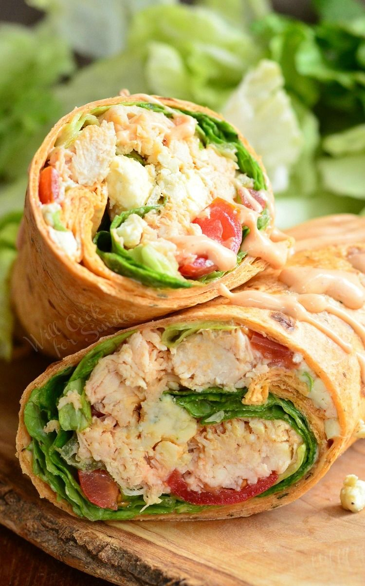

CHICKEN WRAP

Ingredients
- 6 chicken tenders
- 1 cup winger sauce
- 1 cup shredded lettuce
- 1/2 cup diced tomatoes
- 1/2 cup diced celery
- 1/2 cup blue cheese crumbles
- 4 Tbsp Ranch dressing
- 2 large tortillas
Instructions
- Cook chicken tenders in winger sauce until completely cooked, about 15-17 minutes.
- If your tortillas are cold then warm them up in a microwave for about 5-7 second to bring to room temperature
- Chop cooked chicken and place it back into the skillet where you cooked it. Mix chicken with the sauce left in the pan. Salt to taste
- Lay tortillas flat. Divide lettuce, tomatoes, celery, blue cheese crumbles, chopped chicken between the two tortillas. Drizzle on top with ranch
- Roll carefully, tucking in sides as you roll. Secure with toothpicks and cut in half.